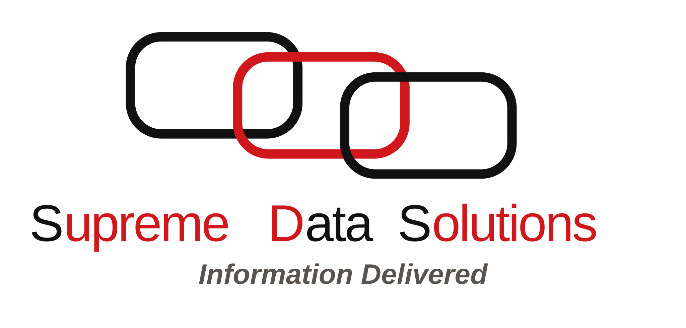

Healthcare data. Architecture. Delivery.
Database and data platform expertise for organizations that need accuracy, structure, and results.
Supreme Data Solutions helps businesses design data architecture, implement durable database solutions, execute migrations, and build ETL and ELT pipelines for complex operational, clinical, research, and reporting needs.
- Database design, architecture, implementation, and migration
- Healthcare, clinical research, and government reporting data
- 20+ years of delivery across ETL/ELT, standardized data models, and Epic-certified experience
Modern identity

Trusted in
Healthcare delivery, clinical research, and regulated reporting environments
Specialized in
Data architecture, migration strategy, ETL/ELT, and healthcare information models
Operating principle
Make complex data reliable, usable, and aligned to business goals.
Experience
Built on long-running hands-on work across healthcare, research, education, and reporting-intensive environments.
More Than Two Decades in Data Delivery
Experience spanning data architecture, database administration, ETL, migration, and implementation work since 2003 through Supreme Data Solutions and client-facing leadership roles.
Healthcare and Research Leadership
Publicly listed experience includes data architecture and database leadership work with ReportingMD, iVantage Health Analytics, Massachusetts General Hospital, and healthcare-focused technology organizations.
Institutional and Public-Sector Depth
Additional public experience includes work connected to Harvard Business School, the Museum of Science, Massachusetts Technology Corporation, and the Massachusetts Department of Education.
Capabilities
Focused on the data foundations that businesses depend on but often struggle to modernize safely.
Source Systems
EHRs, apps, files, legacy databases
Architecture + Transformation
Modeling, migration, ETL/ELT, validation
Business Outcomes
Clinical research, reporting, analytics, operations
Database Design and Architecture
Design data models, storage patterns, and system architecture that support performance, governance, reporting, and long-term maintainability.
Migration and Data Integration
Lead database migrations, legacy modernization, and ETL/ELT implementation with a focus on data quality, continuity, and operational stability.
Healthcare and Regulated Data Expertise
Support healthcare organizations, research programs, and reporting teams with clinical data workflows, standardized data models, Epic-aware delivery, and compliance-minded execution.
Selected Work
Representative engagements across healthcare, research, education, and public-sector operations.
Museum of Science
Digital experiences supporting engineering education and public-facing learning programs.
TopCare
Population health work centered on analytics, care coordination, clinical data workflows, and operational visibility.
HBX
Online learning platform work designed to translate classroom rigor into scalable digital delivery.
Mozaic Medical
Practice-management solutions built for connected healthcare ecosystems, operational workflows, and dependable data exchange.
Center for Quality and Safety
Support for quality, safety, and reporting initiatives where clinical insight, data integrity, and institutional scale must work together.
Early Education and Care
Systems serving families, administrators, and public programs with clearer operational foundations.
Port Authority NY/NJ
Work tied to high-volume transportation and trade environments where reliability is not optional.
Laboratory of Computer Science
Health and research informatics collaboration grounded in practical data architecture for clinical and research impact.
Approach
Data modernization is a business discipline, not just a technical exercise.
Start with the reporting and operational reality
Identify the data flows, business rules, and reporting obligations that cannot break, then design around them first.
Build for production, not theory
Use practical architecture, migration planning, and pipeline design that fit existing systems, timelines, and team constraints.
Deliver something maintainable
Favor clear models, traceable transformations, and durable implementation over one-off fixes that create future risk.
Current systems, data risk, reporting obligations
Target models, architecture, migration path
Pipelines, validation, delivery, production fit
Operational support, reporting confidence, scale
Contact
Bring in database and healthcare data expertise where the work needs to be right the first time.
Supreme Data Solutions helps organizations that need stronger data architecture, safer migrations, cleaner reporting pipelines, and healthcare-focused data leadership.